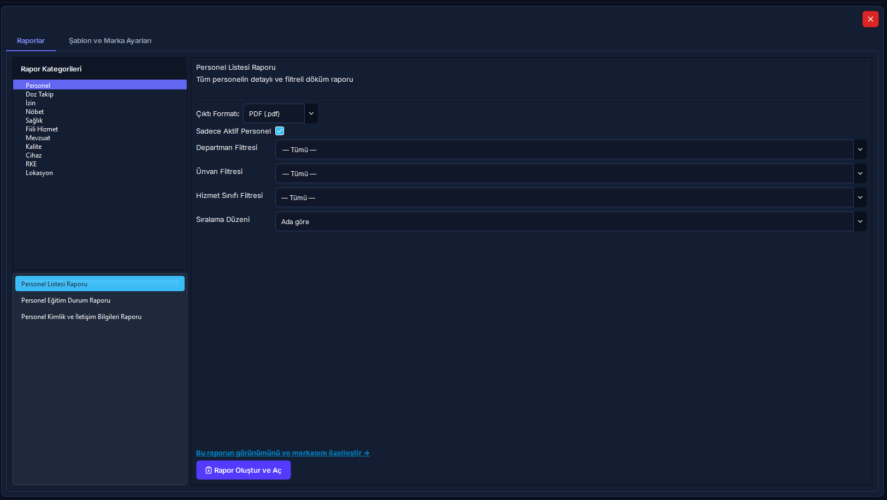
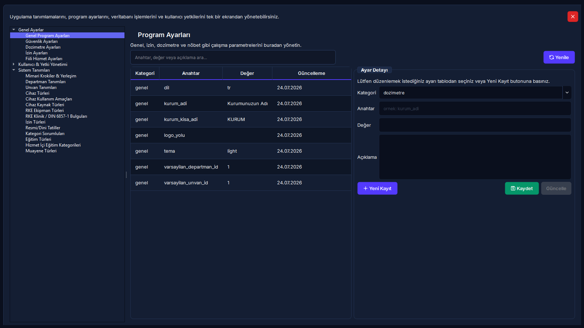
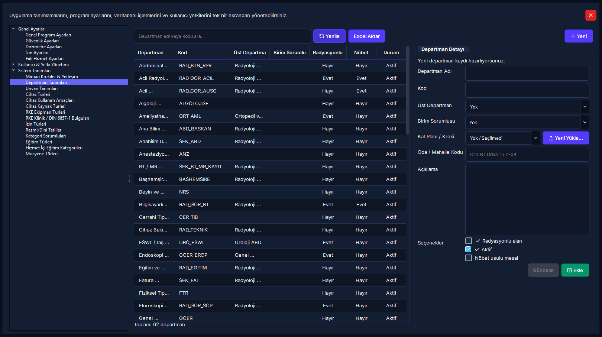

Sistem Ayarları, Şablon Merkezi & Tanımlamalar
Kurum çift başlık ve çift logo antet yapılandırması, Word ve Excel rapor şablonlarının yönetimi, hastane departman hiyerarşisi, kadro unvanları ve resmi tatil takviminin merkezi operasyonel yönetim rehberi.
Hızlı Reçete: Kurumsal Antet ve Çift Logo Tanımlama
Resmi raporların üst antetini ve logolarını 30 saniyede sisteme işleyin
Tüm Word ve Excel raporlarında resmi kurum başlıkları ve logolarının otomatik basılması.
[Rapor Şablonları] ekranında [Kurum Başlık 1] ve [Kurum Başlık 2] metinlerini girip, [Gözat...] butonlarıyla sol/sağ logoları seçin.
Logolar güvenli kaynak kasasına kopyalanır; canlı önizleme güncellenir ve şablonlardaki yer tutuculara otomatik işlenir.
📌 5N1K Kural ve Ayar Çözümleme Tablosu
Tüm kontroller test edilmiştir🔄 Departman Yönetimi & Güvenlik Kalkanı Süreci
Döngü & Transfer Kontrolü🖥️ Ekran Rehberi ve Kritik Arayüzler



🚀 Adım Adım Operasyonel Eylem Akışı
1 Kurum Başlıklarını ve Resmi Çift Logoyu Yapılandırma
- Sol gezinim menüsünden [Sistem Ayarları] > [Rapor Şablonları & Kurum Anteti] sekmesini açın.
- [Kurum Başlık 1] alanına üst idari kurum adını (Örn: T.C. SAĞLIK BAKANLIĞI), [Kurum Başlık 2] alanına hastane/fakülte adınızı yazın.
- Başlıkların raporda görünmesi için sollarındaki [Kurum Başlık 1] ve [Kurum Başlık 2] kutularını işaretleyin.
- [Kurum Logo 1] ve [Kurum Logo 2] yanındaki [Gözat...] butonlarına tıklayarak bilgisayarınızdaki logo dosyalarını seçin.
- Sağ paneldeki Canlı Önizleme alanında logoların ve başlıkların tam konumunu denetleyin.
- Alt kısımdaki [Kaydet] butonuna basın. Başarı bildiriminden sonra üretilen tüm resmi raporlar bu anteti kullanır.
2 Yeni Departman Tanımlama ve Mimari Kat Planı Eşleme
- Sistem Yönetimi ağacından [Sistem Tanımları] > [Departman Tanımları] sayfasına geçin.
- Araç çubuğundaki [Yeni] butonuna tıklayın.
- [Departman Adı] alanını doldurun ve [Kod] kutusuna standart formatta (2-20 karakter, büyük harf) bir kod belirleyin (Örn: RAD_MR).
- Eğer bir alt ünite ise [Üst Departman] açılır kutusundan bağlı olduğu ana anabilim dalını seçin.
- [Birim Sorumlusu] kutusundan ilgili yetkili hekimi veya amiri atayın.
- Birim radyasyon içeriyorsa [Radyasyonlu alan] kutusunu, vardiyalı çalışıyorsa [Nöbet usulü mesai] kutusunu işaretleyin.
- [Kat Planı / Kroki] açılır kutusundan ilgili katı seçin veya [Yeni Yükle...] butonuyla doğrudan PDF/PNG kat planı yükleyin.
- [Ekle] butonuna basarak işlemi tamamlayın.
3 Resmi/Dini Tatil Takvimini Düzenleme (0.5 Gün Kuralı)
- Ağaç menüsünden [Sistem Tanımları] > [Resmi/Dini Tatiller] sayfasına tıklayın.
- [Yeni] butonuna basın. [Tarih] alanından tatil takvim gününü seçin.
- [Tatil Adı] alanına resmi adı yazın veya listeden seçin (Örn: Cumhuriyet Bayramı, Kurban Bayramı Arefesi).
- [Tür] kutusundan Resmi, Dini veya İdari seçeneğini belirleyin.
- Tam gün tatillerde [Gün Sayısı] kutusunu
1.0, arefe günlerinde mutlaka0.5yapın. - [Ekle] butonuna tıklayın. Nöbet dağıtım motoru ve izin hakediş modülleri takvimi anında dikkate alacaktır.
❓ Sıkça Sorulan Sorular (SSS)
Fiili hizmet (FHZ) hesaplama yöntemini yıl ortasında değiştirebilir miyiz?
Fiili hizmet hesaplama yöntemi (Hibrit, Manuel veya Nöbet) değiştirildiğinde geçmiş dönemlerde kapatılmış ve SGK'ya bildirilmiş olan yıpranma payı puantajlarının tutarlılığı etkilenebilir. Sistem bu sebeple değişiklik anında ekrana Kritik Ayar Değişikliği ikazı getirir. Bu ayarın takvim yılı veya mali dönem başında planlı olarak değiştirilmesi önemle tavsiye edilir.
Kapatılmak istenen bir departmanı pasife alırken sistem neden hata veriyor?
RADPYS veri bütünlüğü kuralı gereğince; içerisinde en az 1 aktif personel kaydı veya kendisine bağlı aktif alt departman bulunan birimler pasife alınamaz. Bu durumda sistem "Bu departman pasife alinamaz: X personel kaydi... Once bagimliliklari kaldirin." uyarısı verir. İşlemi yapabilmek için öncelikle o departmandaki personelleri [Personel Listesi] ekranından başka bir aktif birime transfer etmeniz gerekir.
Arefe günlerini neden tam gün (1.0) yerine 0.5 gün olarak girmeliyiz?
Mevzuata göre dini bayram arefeleri saat 13:00 itibarıyla resmi tatil sayılmaktadır. Nöbet dağıtım motoru ve fazla mesai hesaplayıcısı, personelin sabah çalıştığı mesaiyi normal, öğleden sonrasını ise resmi tatil nöbet katsayısıyla hesaplar. Gün sayısı 0.5 girildiğinde sistem bu yarım günlük ayrımı kusursuz şekilde puantaja yansıtır.
"Yeniden Oluştur" butonuna bastığımda Word veya Excel'deki özel tasarımlarım kaybolur mu?
Evet. [Yeniden Oluştur] butonu, ilgili Word veya Excel şablonunu doğrudan kurulum anındaki fabrika standartlarına döndürür. Şablon üzerinde daha önce yapmış olduğunuz tablo ve sütun düzenlemelerini kaybetmemek için butona basmadan önce [Klasörü Aç] butonuyla data/templates/ klasörünün bir yedeğini almanızı önemle öneririz.